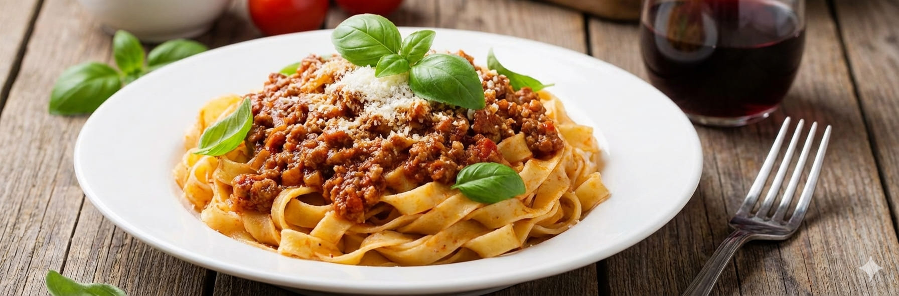

Tagliatelle a la Bolognesa

- 🕒 Tiempo: 50min
- 👩🍳 Dificultad: Baja
- 🍽️ Porciones: 6-8
El clásico de los domingos que nunca falla, con esa salsa espesa y sabrosa que abraza cada cinta de pasta.
Ingredientes
- 500g de Tagliatelle (cintas anchas) secos o frescos.
- 500g de carne picada especial (con poca grasa).
- 1 cebolla grande picada fina.
- 1 zanahoria mediana rallada o picada muy pequeña (aporta el dulzor necesario).
- 1 rama de apio picada (opcional, pero le da el toque auténtico).
- 2 latas de puré de tomate o tomate triturado (aprox. 800g en total).
- 1/2 vaso de vino tinto (o blanco).
- Aceite de oliva, sal, pimienta y 1 hoja de laurel.
Preparación
- En una olla amplia con aceite de oliva, rehogar la cebolla, la zanahoria y el apio con una pizca de sal hasta que estén tiernos (unos 10 min).
- Subir el fuego y agregar la carne picada. Cocinar removiendo y "rompiendo" la carne con cuchara de madera para que no queden bolas grandes, hasta que cambie de color y esté dorada.
- Verter el vino y dejar evaporar el alcohol (2 o 3 minutos).
- Agregar el tomate y la hoja de laurel. Bajar el fuego al mínimo, tapar y cocinar unos 30-40 minutos para que los sabores se concentren y la salsa espese. Rectificar sal y pimienta.
- Cocinar la pasta en abundante agua hirviendo con sal hasta que esté al dente. Colar.
- El toque final: No sirvas la pasta blanca con la salsa arriba. Vuelca la pasta dentro de la olla con la salsa, mezcla bien durante 1 minuto al fuego y sirve inmediatamente con lluvia de queso.